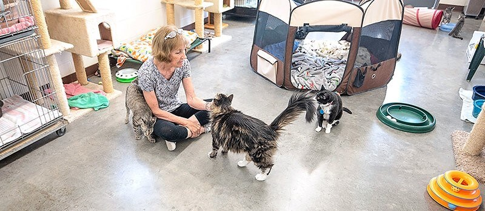

Purrfect Shelter

Hace más de una década, un pequeño grupo de amantes de los gatos decidió que debían hacer algo para abordar el creciente problema de los gatos sin hogar en nuestra comunidad. Así nació nuestro refugio de adopción de gatos. Comenzamos con un modesto refugio temporal en el garaje de una de nuestras fundadoras, donde se ofrecía refugio, cuidado y amor a unos pocos gatitos desamparados. Con el tiempo, nuestro compromiso creció. A medida que más personas se unieron a nuestra causa, pudimos recaudar fondos y expandir nuestras instalaciones. Se construyó un refugio permanente, un lugar donde los gatos podrían vivir con comodidad mientras esperaban a sus nuevas familias. Nuestra comunidad respondió de manera asombrosa, brindando apoyo financiero y donando su tiempo para ayudar a cuidar a los gatos.
Hoy, somos un refugio de adopción de gatos establecido y respetado en nuestra área. Hemos encontrado hogares amorosos para cientos de gatos y gatitos, y seguimos trabajando incansablemente para mejorar sus vidas y encontrarles el cariño que se merecen. Nos enorgullece decir que hemos marcado una diferencia tangible en la comunidad de amantes de los gatos. Nuestra misión es clara: seguir protegiendo y cuidando a los gatos sin hogar, ofrecer un espacio donde puedan sanar y prosperar, y, finalmente, llevar alegría a los corazones de las familias que los adoptan. En nuestro refugio, cada gato tiene una historia, y estamos ansiosos por ser parte de la suya. ¡Acompáñenos en este viaje y ayúdenos a continuar nuestra labor de amor por los gatos y gatitos necesitados!